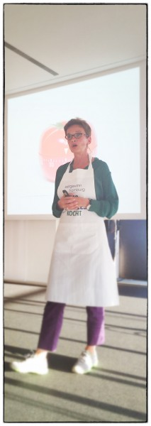
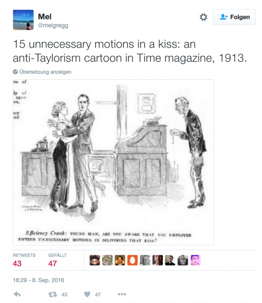

Gar nicht lean ist auch mal gut
Das schlanke, entschlackte, effiziente Büro ist meine Leidenschaft. Doch vor einiger Zeit habe ich erfahren, dass es manchmal gut ist, nicht lean zu sein, nicht auf die „schlanke Linie“ zu achten.

Ich war eingeladen, einen Vortrag vor etwas 70 Gästen bei einer Abendveranstaltung in einer Bank zu halten. Es ging um einen Impuls in Sachen Digitalisierung – der angesichts der fortgeschrittenen Stunde und des anschließenden Grillens sehr locker verpackt werden sollte. Also habe ich mich hinreißen lassen, als Ms. Paperless ein kleines papierloses Grill-Menü zu präsentieren 😉Das hat wunderbar geklappt. Zuschauer und Veranstalter waren zufrieden.
Allerdings habe ich am Ende das „Produktivitätsziel“ nicht erreicht. Eigentlich hätte mein Vortrag nämlich nur 15 Minuten und 15 Sekunden dauern dürfen, doch ich hatte 20:20 Minuten benötigt. Keine Punktlandung, oder?
Wie war angesichts einer solchen Überziehung von mehr als 30% aber die Zufriedenheit aller zu erklären?
Erfolgreiche Wissensvermittlung ist nicht lean
Während meiner anschließenden Reflexion bin ich dann darauf gekommen: Bei einem Vortrag geht es nicht um die übliche Produktivität! Ziel ist eben nicht, in einer vorgegebenen Zeit, möglichst viel rüberzubringen. Nicht die Quantität ist entscheidend, nicht der größtmögliche Durchsatz an Informationen, sondern die Qualität des Erlebnisses.
Die Vermittlung von Informationen oder das Lernen im weitesten Sinn sollen, ja, dürfen nicht lean stattfinden.
Lean, das bedeutet für mich ohne Abweichungen und Umwege, ohne Zögern und Warten, ohne Wiederholungen und Nachbesserungen. Kurz: no deviation, hesitation, repetition!
Mein Vortrag hat mir jedoch wieder vor Augen geführt, dass die Informationsübertragung zwischen Menschen davon profitiert, wenn es Umwege, Verzögerungen und Wiederholungen gibt. Sie sind rhetorische Stilmittel.
- Umwege: Mein Vortrag war keine ZDF-Sendung. Es ging nicht nur um Zahlen, Daten, Fakten. Im Sinne der Sache wäre das effizient gewesen; ich hätte das Publikum „druckbetanken“ können. Stattdessen bin ich jedoch Umwege gegangen. Ich habe hier und da kleine Geschichten erzählt und nicht nur verbal „Bilder gemalt“. Dadurch habe ich das Vorstellungsvermögen der Zuhörer angesprochen; sie konnten das Gesagte besser mit ihren eigenen Erfahrungen verbinden. Aufmerksamkeit war die Folge und hoffentlich auch später mehr Erinnerung.
- Verzögerungen: Zu viel Input pro Zeiteinheit ist auch nicht gut. Deshalb habe ich meine Rede mit Pausen und rhetorischen Fragen hier und da bewusst verlangsamt. So hatte das Publikum Zeit, ein wenig selbst mitzudenken oder aufzuholen, falls es einmal unaufmerksam gewesen sein sollte.
- Wiederholungen: Ich habe Werkzeugnamen mündlich genannt und zusätzlich auf vorbereiteten Karten an eine Pinwand gehängt. Ich habe ein Video gezeigt, das den Umgang mit einem Scanner skizziert, zusätzlich den Scanner aber auch noch dabei gehabt und präsentiert. Ich habe am Ende die wichtigsten Punkte meiner Darstellung nochmal zusammengefasst. Das alles waren Wiederholungen – doch die haben das Publikum nicht gelangweilt, sondern ihm geholfen, etwas vom Vortrag mitzunehmen. Erinnerung braucht Wiederholung, wie Sie sicher auch schon erfahren haben beim Vokabeln pauken.
Ms. Paperless so gar nicht lean. Das hätte ich nicht gedacht. Auch wenn ich diese rhetorischen Mittel bewusst eingesetzt hatte, so war mir nicht klar, dass sie im Grunde nicht lean sind.
Lernen braucht Fett am Fleisch des Inhalts
Doch wie sich herausstellte, war genau das angemessen. Lernen braucht Fett am Fleisch des Inhalts. Es ist ein Irrtum, dass Kommunikation auf das Wesentliche reduziert werden sollte, damit möglichst schnell möglichst viel rüberkommt. Klar, zu viel Blumigkeit ist auch nicht gut. Doch zunächst einmal braucht menschliche Kommunikation Redundanz. Es gibt einfach zu viele Wege, auf denen etwas verlorengehen kann: Ihr Gegenüber kann unaufmerksam sein. Ihr Gegenüber kann einen anderen Wissensstand als angenommen haben. Die Übertragung kann gestört sein. Die Stimmung bei Ihrem Gegenüber kann einem flotten Verständnis abträglich sein.
Aus dem Grunde gibt es bei Polizei und Militär auch Buchstabieralphabete. Je nach Verbindungsqualität kann es z.B. schwierig sein, bei der Übermittlung eines KFZ-Kennzeichens oder einer Positionsangabe zwischen „P“ und „B“ oder anderen Buchstaben zu unterscheiden. Also wird nicht „ABC“ buchstabiert, sondern „Anton, Berta, Caesar“ oder „Alpha, Bravo, Charlie“ usw. Ganze Worte statt einzelner Buchstaben polstern die Information. Es wird ein kleiner Umweg gegangen. Das ist im Moment scheinbar nicht effizient – aufs Ganze gesehen jedoch ist das der verlässlicherere Weg zur Informationsübermittlung.
Dito bei einem Vortrag, der Storytelling betreibt. Die eigentlichen ZDF werden gepolstert übermittelt.
So ist das mit dem Lehren und Lernen. Druckbetankung funktioniert selten. Zu viele ZDF führen zu einer Reizüberflutung. Die Aufmerksamkeit des Publikums sinkt dann sehr schnell.
Ich freue mich, dass ich diesem Effekt bei meinem Vortrag erfolgreich ausgewichen bin. Beim nächsten Mal werde ich mich nicht grämen, die Zeit zu überziehen. Zumindest nicht, wenn alle augenscheinlich zufrieden sind 😉
Also: Seien Sie durchaus verschwenderisch mit Worten, wenn Sie Ihren Kollegen und Mitarbeitern Informationen mitteilen. Sie erhöhen die Wahrscheinlichkeit, dass bei Ihrem Gegenüber das Gewünschte ankommt.
P.S: Es gibt übrigens noch eine Aktivität, bei der Sie den lean-Gedanken tunlichst in der Schublade lassen sollten: das Küssen 🙂

Weitere Artikel

Regeln für KI im Office
ChatGPT & Co haben sich schnell in die Herzen und Alltag von vielen Menschen im Berufs- und Privatleben gespielt. Diese neuen Werkzeuge eröffnen uns viele Chancen, nicht nur effizienter zu werden, sondern auch kreativer. Aber …

KI als Copilot für die Assistenz
KI in Form von ChatGPT & Co sind hervorragende neue Werkzeuge im Office-Alltag, um produktiver und ja, auch kreativer, zu werden. Neugier statt Angst ist angezeigt im Umgang mit diesen Werkzeugen, die wie andere Werkzeuge auch …